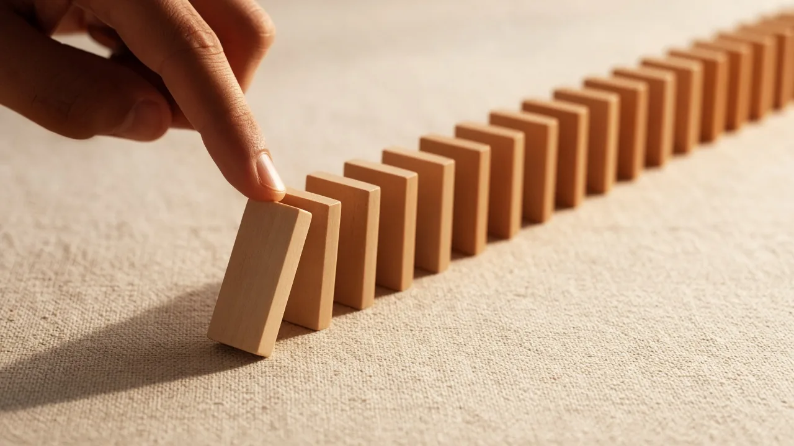
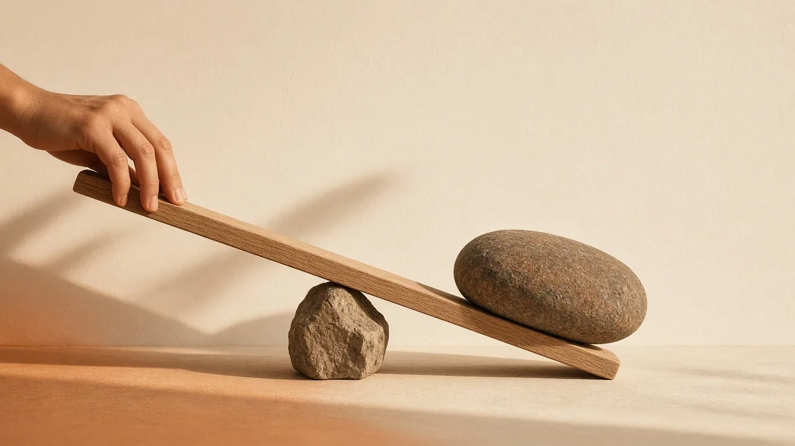
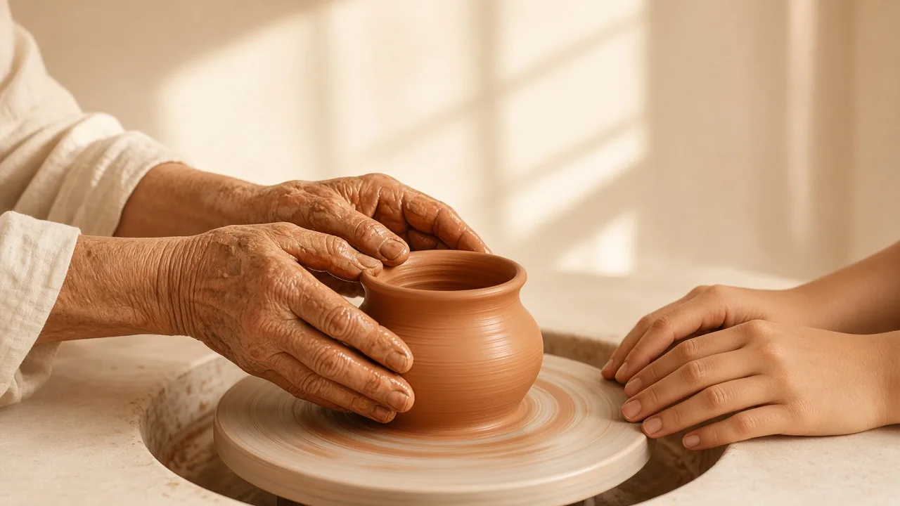
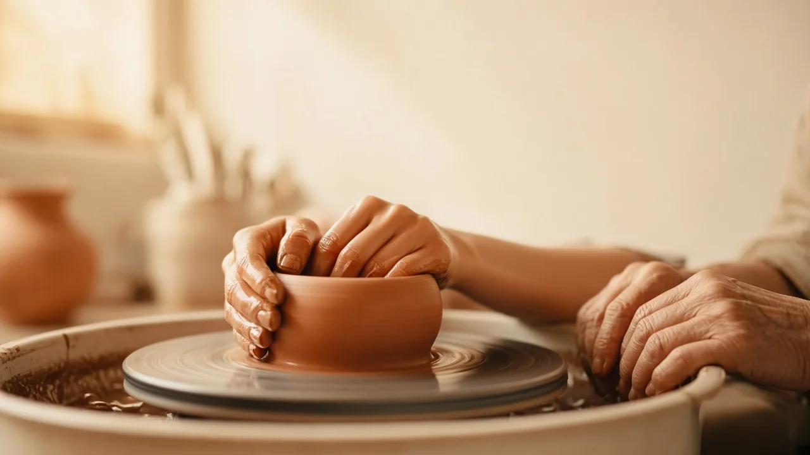
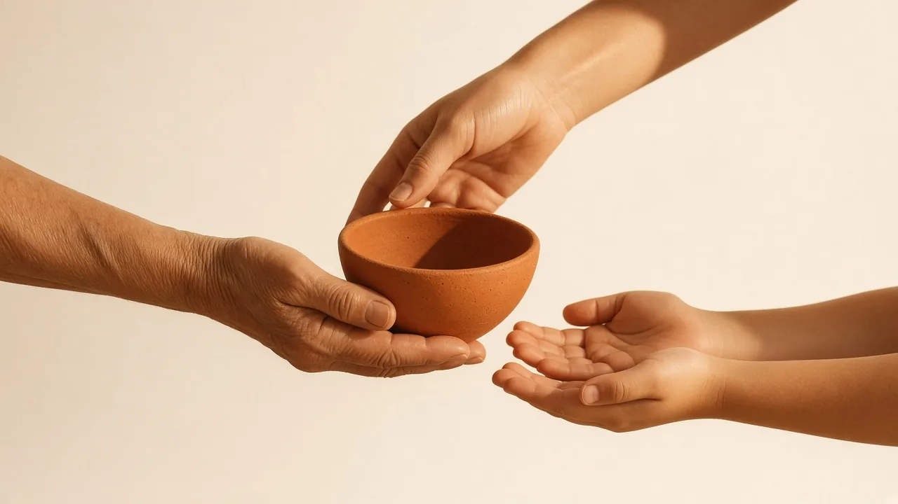
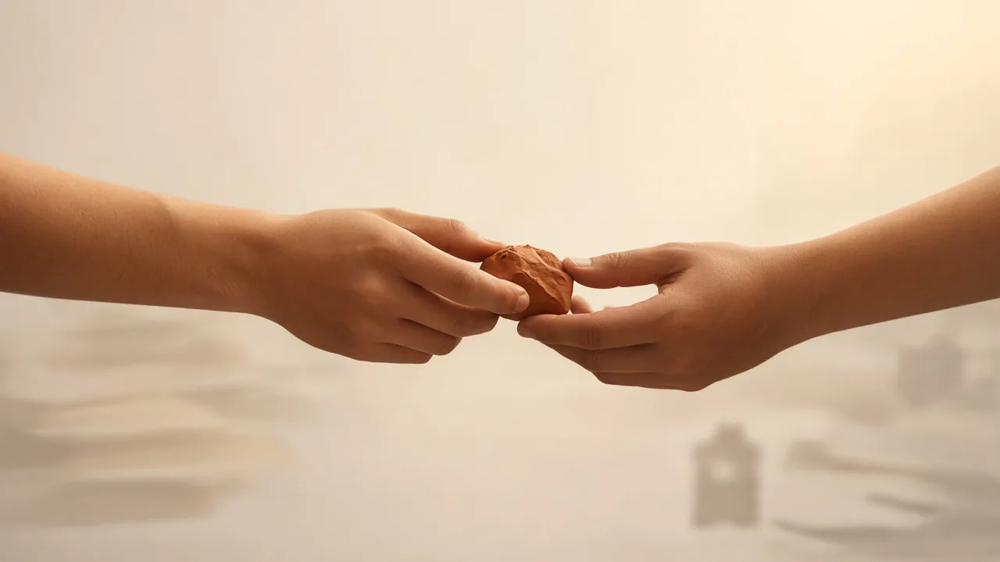

appuie
↓La même poussée.
D'autres formes.

Le même geste,
d'une personne à l'autre.
- montrer
- refaire
- vérifier



Le résultat tient.
une part au mentor lien PayPal à venirQuand la chaîne est directe,
ce qui est en trop s'efface.

touche ce qui est en trop
Rien ne disparaît. Ça se simplifie.
montrer · refaire · vérifier